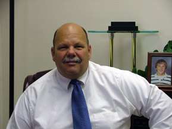

Home | Family | Educational Background | Professional Accomplishments | Community Involvement | Contact
|  | “I am proud to be running for District Court Judge for Elko County. It is my strong belief that this important position is one that should reflect impartial objectivity, dependability, and ethical actions at all times. I have a profound respect and love for the law, and I would do my best to serve you in an ethical and dignified manner. “This is my promise to the residents of Elko County – to serve this community with fairness, commitment and dedication.”
|
|
|